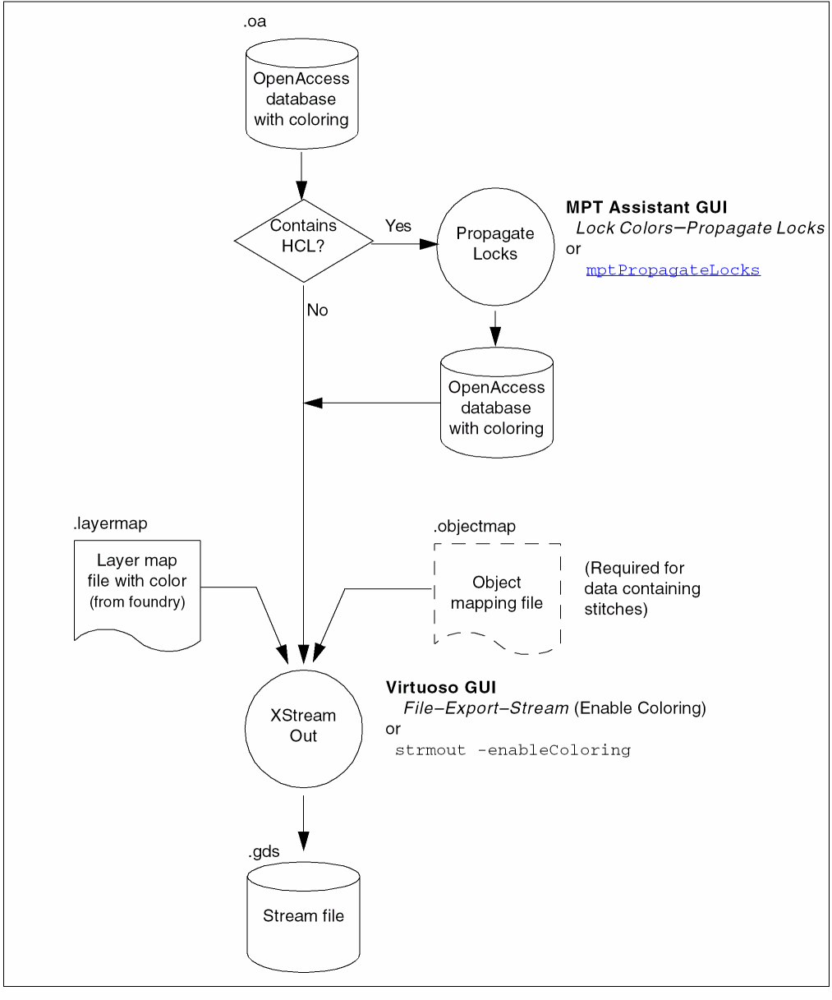
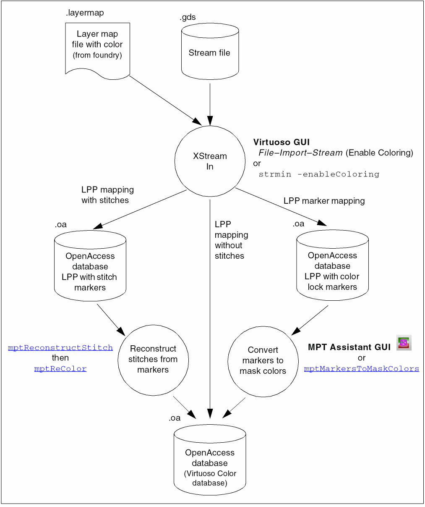

6
Importing and Exporting Data
The following methods for importing and exporting data are discussed in this chapter:
Using XStream
The XStream translator is used to translate designs in Stream format to the OpenAccess database and conversely.
- XStream In translates designs in Stream format to the OpenAccess database.
- XStream Out translates designs from the OpenAccess database to Stream format.
This section describes the following:
- Exporting Stream Files with Coloring
- Importing Stream Files with Coloring
- Using Enhanced Layer Map Files for Coloring
- Types of Color Representations
- Handling Stitches
- Warning Messages from XStream
For more information on using XStream and the XStream GUI, refer to Just Design Data Translator’s Reference.
Exporting Stream Files with Coloring
Figure 6-1 shows the flow for translating an OpenAccess database with coloring to Stream (GDSII) format.
- A layer map is required that includes color mapping specified by the foundry. For more information, refer to Using Enhanced Layer Map Files for Coloring.
- If any shapes in your design are color locked using hierarchical color locking (HCL), follow the procedure in Propagating Locks to ensure that the HCL data is included during stream out. For more information on HCL, refer to Hierarchical Color Locking.
- If the OpenAccess database contains stitches, an object mapping file is also required, as described in Handling Stitches.
-
The data is translated using the Virtuoso GUI (File – Export – Stream in the CIW), or by using
strmoutfrom the Textual User Interface.To stream out color, "Enable Coloring" must be enabled in the XStream Out GUI or "-enableColoring" must be included in theFigure 6-1 Stream Out with Coloring Flowstrmoutcommand, before the layer map is loaded. Your layer map must include the photo mask color and color state columns.
Importing Stream Files with Coloring
Figure 6-2 shows the flow for translating a Stream (GDSII) file with coloring to an OpenAccess database.
- A layer map is required that includes the color mapping specified by the foundry. For more information, refer to Using Enhanced Layer Map Files for Coloring.
-
The data is translated using the Virtuoso GUI (File – Import – Stream), or by using
strminfrom the Textual User Interface. -
If the resulting OpenAccess database includes additional markers to represent coloring, the markers must be converted to mask colors either by using the mptMarkersToMaskColors SKILL function or from the MPT Assistant.To stream in color, "Enable Coloring" must be enabled in the XStream In GUI or "-enableColoring" must be included in theFigure 6-2 Stream In with Color Flow
strmincommand, before the layer map is loaded. Your layer map must include the photo mask color and color state columns.
Using Enhanced Layer Map Files for Coloring
XStream can export and import color information to/from external tools that require layer-purpose pairs to represent mask colors. Two columns have been added to the layer map file for this purpose:
-
Photo mask color with valid values
mask1Color tomaskXColorwhere X is the number of masks defined for the layer in the technology file. -
Color State with valid values
lockedandunlocked.
#layer purpose GDSlayer GDSdata material mask qual photomask colorstate
Metal1 drawing 1 0
Metal1 drawing 1 1 mask1Color unlocked
Metal1 drawing 1 2 mask1Color locked
Metal1 drawing 1 3 mask2Color unlocked
Metal1 drawing 1 4 mask2Color locked
Both the locked and unlocked states of one color (for example, mask1Color) can be mapped to the same layer and data type in the stream (GDS) file.
Types of Color Representations
Stream file data is mapped to layer-purpose pairs in one of two ways, as determined by the foundry:
Layer-Purpose Pair Mapping
This coloring maps GDS layer and data types to layer-purpose pairs. Each colored shape in GDS is represented by a shape in the OpenAccess database.
Layer-Purpose Pair Marker Mapping
This coloring maps GDS layer and data types to layer-purpose pairs. Each colored shape in GDS is represented in the OpenAccess database by two shapes, the original shape and a color marker. After this type of data is streamed in, the markers must be removed using the mptMarkersToMaskColors SKILL function or from the Multiple Patterning toolbar (described in
Handling Stitches
Stitches have special requirements when streaming out and streaming in.
Stream Out
When exporting an OpenAccess Database with stitches, you must provide an object mapping file for the stitches. This is a text file that maps the stitches by layer to the Stream layer and data type. For example,
#ObjectType ObjectSubType LayerName Stream# Datatype#
Stitch None Metal1 30 43
Stitch None Metal2 34 43
Stitch None Metal3 38 43
The object mapping file can be specified using the -objectMap command-line option to strmout, or from the StreamOut Options form’s Object tab GUI.
Stream In
After importing a stream file that contains stitches, stitches will appear as stitch shape markers that identify the overlap area. You must reconstruct the stitches before using the cluster-based color engine. Use the mptReconstructStitch SKILL function for each layer with stitches, then mptReColor.
Warning Messages from XStream
XSTRM-325
If a colored shape is found without a color-aware mapping in the layer map file, a warning message indicates the layer-purpose pair for the shape with its coordinates, photomask color, and color state. This can be intentionally done to filter out shapes on specific layer-purpose pairs with a specific photomask color and/or color state. For example, if you could exclude a mapping for ‘metal1:drawing’ with photomask ‘mask2Color’ and color state ‘unlocked’, any shapes of the excluded mapping type would not be streamed out.
Layer-Purpose Pair to Color Data
Some designs use separate layer-purpose pairs to represent the multiple patterning mask information. SKILL functions are provided to convert that data to a database that can be used by the Virtuoso color engine.
Merging Layer-Purpose Pairs on Two Layers (2-to-1)
For designs that represent colored data by overlapping the metal shapes on one layer-purpose pair with precoloring markers on another layer-purpose pair, use mptMarkersToMaskColors. From the layout view, the marker and drawing layer will be merged into one drawing layer through the hierarchy.
For details on using this function, refer to mptMarkersToMaskColors in Virtuoso Layout Suite SKILL Reference.
Merging Multiple Layer-Purposes on One Layer (1-to-1)
For designs that represent colored data using multiple purposes on one layer, use mptLPPMergeToColor. This function creates a new design hierarchy in which the shapes in the multiple layer-purpose pairs are merged to shapes on a single layer-purpose pair. The shapes in the merged representation will have colors corresponding to the layer-purpose pair in the original layer-purpose pair representation.
Output can be to the same cellview (overwrite), a different view in the same library, the same view in a different library, or a new library and view.
For details on using this function, refer to mptLPPMergeToColor in Virtuoso Layout Suite SKILL Reference.
Transforming Shapes on Specified Purposes to Colored Blockages
For designs that represent colored blockages using shapes on specific layer-purposes, use mptMarkersToColoredBlockages. From the layout view, the shapes on those purposes are transformed to colored blockages on the same layer through the hierarchy.
Color Data Migration
This section describes how data is handled when migrating from a previous release or another product version.
The standalone utility, mptScan, can be used to detect and correct coloring issues, and remove coloring information from a design.
From/To IC6.1.x
IC6.1.x can open ICADV12.2 layouts without any coloring information in read or edit mode.
IC6.1.x can open ICADV12.2 layouts with coloring information in read-only mode, with the following exceptions: Virtuoso Space-based Router and Virtuoso Routing IDE.
To ICADV12.2 LA4 or above
Some objects that were colored in a previous version of ICADV12.2 appear gray or uncolored in ICADV12.2 LA4 and ICADV12.2 LA4 ISR1. This was due to data and/or libraries using outdated colorSpec bits that are not supported. ICADV12.2 LA4 was enhanced to support up to eight colors in the database, using some bits that had been used for colorSpec in early releases of ICADV12.1.
To ensure that the colorSpec bits are not set in a design,
-
Run mptScan at the command prompt to scan for colorSpec bits in the data.
mptScan -lib
libName-report colorSpec -
If colorSpec bits are detected in step 1
, run mptScan to clear the colorSpec bits.mptScan -lib
libName-clear colorSpec - Open the design in Virtuoso to verify that the coloring is correct.
To ICADV12.2 Base Release or ICADV12.2 ISR1
Modifying designs in ICADV12.2 base release and ICADV12.2 ISR1 can result in the data being read-only in ICADV12.1 and pre-LA6 versions of ICADV12.2.
If you do not color or lock geometry, modifying a via with the Property Editor in ICADV12.2 base release or ICADV12.2 ISR1 will result in setting the coloring infrastructure to a version that can be edited only by ICADV12.2 LA6 and later releases. If you are coloring or locking geometry currently using ICADV12.2 LA4 and earlier versions, using ICADV12.2 base release to edit vias or perform coloring operations such as lock propagation will result in using the LA6 version of the coloring infrastructure. Any design with the ICADV12.2 LA6 version of the coloring infrastructure can be read into ICADV12.1 and ICADV12.2 LA4 and earlier releases, but cannot be edited.
Converting Colored Data to Be Editable in Earlier Releases
To determine if a design is using the ICADV12.2 LA6 version of the coloring infrastructure, run the mptScan utility with the -checkColorVer argument:
mptScan -lib <libName> -checkColorVer
It will report the MPToolkit coloring data version. For example,
INFO: Cellview "mylib/mycell/layout" contains MPToolkit coloring data version: 4, CDS coloring data version:3
INFO: MPToolkit coloring data version can be reduced from 4 to 1.
In this case, no partially locked vias were found and fewer than four mask colors were used, so the MPToolkit coloring data version can be reduced from 4 to 1. If four mask colors were used with no partially locked vias, the MPToolkit coloring data version could be reduced from 4 to 3.
The MPToolkit coloring data versions are described in the following table:
| MPToolkit coloring data version | Description | Product Version |
|---|---|---|
|
Supports 4+ colors, partial via locking, and fixed mask layer shifting on instances |
To revert a design without colored and locked vias to the pre-ICADV12.2 LA6 version of the coloring infrastructure, run the mptScan utility with the -reduceColorVer argument:
mptScan -lib <libName> -reduceColorVer
It will report the version reduction. For example,
INFO: MPToolkit coloring data version was reduced from 4 to 1.
The version reduction preserves the coloring information and enables the data to be edited in earlier product versions that support the new MPToolkit coloring data version.
Partially locking a via through the Property Editor or lock propagation will cause the data to be converted to the ICADV12.2 LA6 infrastructure. The converted data cannot be reverted to the previous coloring data version unless the designs are changed to fully lock or fully unlock all vias. Hence, it is recommended that if you use color and color locking, ensure that any design groups that move to ICADV12.2 base release or later do not share data with design groups that use limited access releases of ICADV12.2 prior to LA6. If this is not possible, contact Cadence Customer Support for further assistance.
mptScan
mptScan is a standalone utility for detecting and correcting coloring issues, and for clearing the coloring information in a design. It can be accessed from installDirPath/tools/bin.
mptScan be run on an entire library so that the data is consistent for all the cells in the library.Syntax
mptScan -lib libName [options]
Required Arguments
Optional Arguments
Examples
mptScan -lib myLib
WARNING: (mptScan-2): Repair needed for shape cluster data that references a cluster on a different layer.
WARNING: (mptScan-2): Repair needed for via cluster data that references a cluster on a different layer.
INFO: Found advanced node coloring and 2 data issues in 'myLib/top/layout_bk'.
INFO: Found advanced node coloring in 1 (out of 1) layouts.
Finished: mptScan
Scans the cellviews in the myLib library for advanced node coloring issues and outputs warnings for the issues that are found, along with a summary for each scanned cellview.
mptScan -lib myLib -repair
INFO: (mptScan-2): Repaired shape cluster data that referenced a cluster on a different layer. Verify that coloring in this design is correct. If not correct, recolor the design.
INFO: (mptScan-2): Repaired via cluster data that referenced a cluster on a different layer. Verify that coloring in this design is correct. If not correct, recolor the design.
INFO: Repaired 2 found issues in 'myLib/top/layout_bk'.
INFO: Repaired advanced node coloring data issues in 1 (out of 1) layouts.
Finished: mptScan
Repairs advanced node coloring issues in the myLib library.
mptScan -lib HCL -removeData
INFO: Removed advanced node coloring from 'HCL/test/layout'.
INFO: Removed advanced node coloring from 1 (out of 1) layouts.
Finished: mptScan
Removes the coloring information from the cellviews in the HCL library.
mptScan -lib myLib -report colorSpec
Running: mptScan -logFile mptScan.log -lib myLib -report colorSpec
INFO: Found colorSpec data in 'myLib/top/layout_bk'.
INFO: Found colorSpec data in 1 (out of 12) layouts.
Finished: mptScan
Scans the cellviews in the myLib library for the set colorSpec bits.
mptScan -lib myLib -clear colorSpec
Running: mptScan -logFile mptScan.log -lib myLib -report colorSpec
INFO: Cleared colorSpec data in 'myLib/top/layout_bk'.
INFO: Cleared colorSpec data in 1 (out of 12) layouts.
Finished: mptScan
Clears the colorSpec bits in the mylib library.
mptScan -lib myLib -checkColorVer
Running: mptScan -logFile mptScan.log -lib myLib -checkColorVer
INFO: Cellview "myLib/mycell/layout" contains MPToolkit coloring data version: 4, CDS coloring data version:3
INFO: MPToolkit coloring data version can be reduced from 4 to 1.
Reports the coloring data versions for the cellviews in the myLib library and whether the MPToolkit coloring data version can be reduced.
mptScan -lib myLib -reduceColorVer
Running: mptScan -logFile mptScan.log -lib myLib -reduceColorVer
INFO: Cellview "myLib/mycell/layout" contains MPToolkit coloring data version: 4, CDS coloring data version:3
INFO: MPToolkit coloring data version was reduced from 4 to 1.
Reduces the coloring data versions for the cellviews in the myLib library, if possible. The version reduction preserves the coloring information so that it can be edited using an earlier product version that supports the new coloring data version.
Return to top